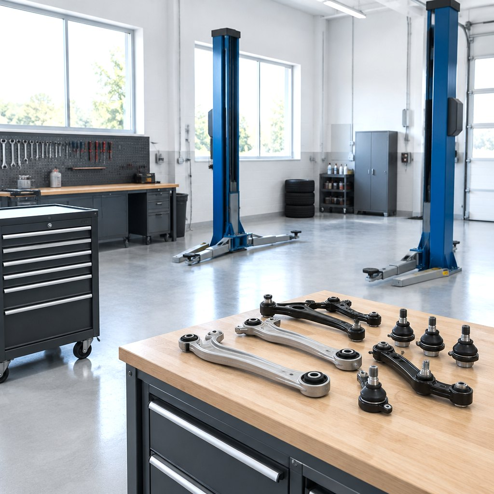

Как проходит работа
От звонка до проверки на дороге. Обычно всё занимает один день, а недостающие детали не приходится ждать неделями.
Шесть шагов
Заранее назовите модель и симптом: так мастер подготовит расходники и время.
1. Звонок или сообщение
Марка, модель, год, что слышно или чувствуется. Сразу скажем, стоит ли ехать.
2. Осмотр на подъёмнике
Проверяем люфты, пыльники, посадки. Называем причину и объём работ.
3. Снятие узла
Демонтируем рычаг или стойку, чтобы работать с узлом на верстаке.
4. Разбор и восстановление
Меняем вкладыш и пыльник, восстанавливаем посадку, набиваем смазку.
5. Установка
Ставим узел на место, затягиваем с нужным моментом, проверяем свободный ход.
6. Проверка
Проверяем на подъёмнике и в движении. Показываем, что стук ушёл, и отдаём машину.
Что взять с собой
Ничего специального: машина, документы и ваше описание симптома.
Автомобиль
Приезжайте на машине: часть проверок делается на подъёмнике, а после установки нужна проверка в движении.
Описание симптома
Когда появился стук, на каких неровностях, менялось ли поведение в повороте. Это ускоряет диагностику.
Фото узла, если есть
Снятый рычаг можно привезти отдельно — по нему сразу скажем, восстановим или нет.
Что получаете
Понятный результат без сюрпризов в счёте.
Гарантия на работу
На восстановление и замену. Если узел застучал из-за сборки — исправим без разговоров.
Согласование объёма
Никаких работ «заодно» без вашего согласия: сначала перечень и стоимость.
Старые детали
Возвращаем снятые детали, чтобы вы видели, что именно было изношено.
Оплата
Наличными и безналично, после проверки результата.
Про запись и визит
Работаем по записи: так вы не ждёте в очереди, а мастер готов к вашей машине.
Да, лучше позвонить заранее: на восстановление выделяется время и подъёмник.
Витебск, Ленинградская улица, 136Бк2. Уточним ориентиры по телефону.
Да, работа обычно занимает день. Можно оставить машину и забрать вечером.
Проверим всю цепочку подвески и скажем, что именно требует вмешательства.
Уточняйте по телефону: график зависит от загрузки, по записи подстроимся.
Запишитесь на удобное время
Скажите модель и симптом — предложим время и скажем, сколько это займёт.